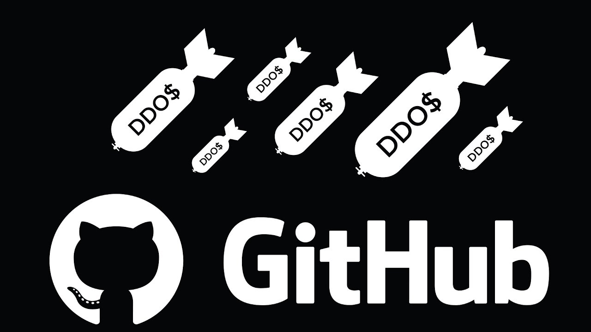
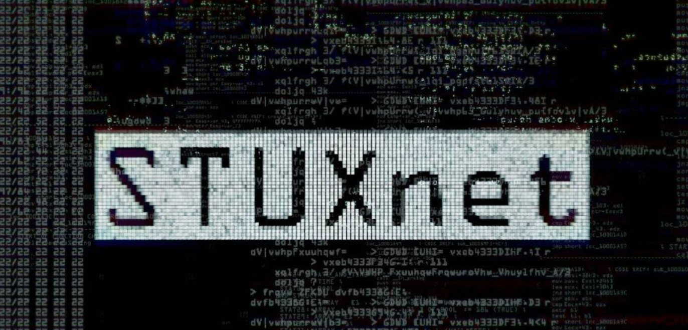
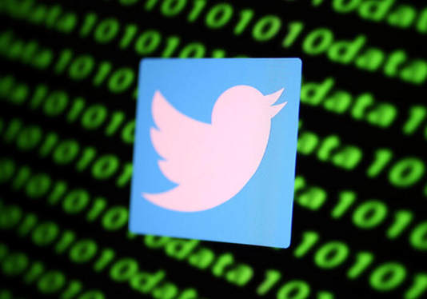

Новини

Рекордна DDoS-атака на GitHub
У лютому 2018 року GitHub зазнав однієї з найпотужніших DDoS-атак в історії з піковою швидкістю трафіку 1,35 Тбіт/с. Хакери використали техніку підміни IP-адрес через уразливі сервери кешування Memcached, що дозволило посилити сміттєвий трафік у десятки тисяч разів без залучення класичних ботнетів. Попри колосальний масштаб, інфраструктура платформи вистояла завдяки хмарним системам захисту Akamai. Шкідливі пакети були швидко відфільтровані, а сервіс залишався недоступним лише близько 5–10 хвилин. Цей кейс став хрестоматійним прикладом ефективного архітектурного планування та швидкої реакції інженерів на безпрецедентні цифрові загрози.

Хроніки Stuxnet
Хробак Stuxnet, створений спецслужбами США та Ізраїлю, здійснив революцію у кібербезпеці, довівши можливість фізичного знищення інфраструктури за допомогою коду. Вірус був націлений на ядерну програму Ірану і проник на ізольований завод у Нетензі через звичайні USB-флешки. Опинившись у системі, Stuxnet перехопив керування промисловими контролерами Siemens та розкрутив центрифуги для збагачення урану до критичної швидкості, змусивши їх розірвати себе зсередини. При цьому на монітори операторів виводилися фейкові нормальні показники. Вірус знищив близько тисячі центрифуг, відкинувши ядерну програму Ірану на роки назад і відкривши епоху державних кібервійн.

Масштабний злам Twitter (X)
У липні 2020 року на верифікованих акаунтах Ілона Маска, Білла Гейтса, Барака Обами та компанії Apple з'явилися заклики надсилати біткоїни, які обіцяли подвоїти. Тисячі користувачів повірили шахрайству, переказавши зловмисникам понад $120 000 за лічені години. Організаторами атаки виявилися звичайні підлітки. Вони не ламали складні шифри, а використали телефонний фішинг і соціальну інженерію проти працівників техпідтримки Twitter. Представившись ІТ-відділом, хакери виманили доступи до внутрішньої адмін-панелі сайту. Інцидент наочно продемонстрував усій Кремнієвій долині, що людський фактор залишається найслабшим місцем у будь-якій системі захисту.
Витік даних Yahoo
У 2016 році Yahoo визнала, що постраждала від серії кібератак, які стали наймасштабнішими в історії Інтернету. Розслідування виявило, що внаслідок зламу, який стався ще у 2013 році, хакери скомпрометували дані абсолютно всіх існуючих на той момент облікових записів — а це понад 3 мільярди акаунтів. У руки зловмисників потрапили імена, електронні адреси, телефони, дати народження та зашифровані паролі. Витік стався саме під час підготовки продажу компанії гіганту Verizon. Через репутаційну катастрофу та розкриття жахливого стану безпеки ринкова вартість Yahoo миттєво впала, а фінальна сума угоди зменшилася на $350 мільйонів.
Всі публікації
| Публікації CyberNews | ||
|---|---|---|
| Назва | Дата | Автор |
| Рекордна DDoS-атака на GitHub | 2018-02-28 | John Doe |
| Хроніки Stuxnet | 2010-06-17 | Jane Smith |
| Масштабний злам Twitter (X) | 2020-07-15 | Alice Johnson |
| Витік даних Yahoo | 2016-10-03 | Bob Brown |